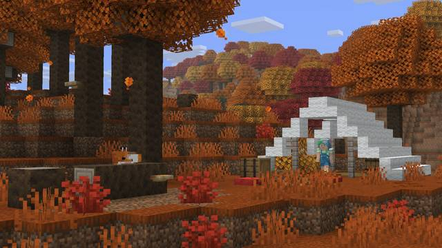

Mods are add-ons made by the Minecraft community. They can add new items, machines, creatures, and dimensions, or just make the game run and look better. With the right mods, the same game feels brand new every time you start a world.
I play modded Minecraft because mods make a great game even better, adding new features, challenges, and ways to play. This site is the guide I wish I had when I started, with simple setup steps and the mods and modpacks I recommend.

Whether you're curious about your first mod or ready to try a full modpack, you're in the right place.